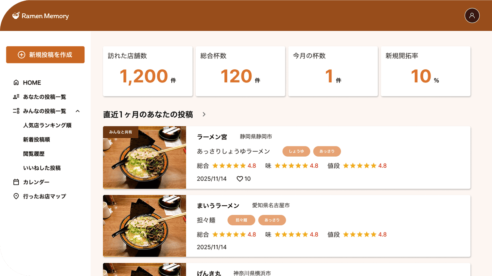
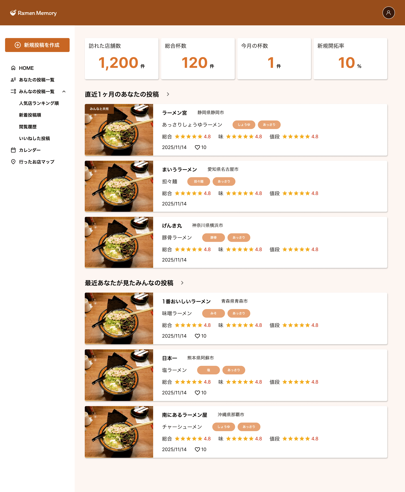

架空
Ramen Memory
design/coding

ラーメン好きが訪れた店舗や食べた一杯を記録・共有できるWebアプリ「Ramen Memory」を企画・デザイン・開発しました。自分専用のラーメン記録として利用できるだけでなく、他ユーザーの投稿を閲覧して新しい店舗を見つけられるコミュニティ機能も備えています。ダッシュボードを中心に、投稿管理やランキング、閲覧履歴、カレンダー、マップなど、ラーメン巡りをより楽しめる機能を搭載しました。
Scroll

- ターゲット
- ラーメン店巡りが趣味の20〜40代の男女。食べたラーメンを写真とともに記録したい方や、おすすめのお店を探したい方、全国のラーメン好きと情報を共有したい方。
- 目的
- 訪問履歴や評価を一元管理できる環境を提供し、自分だけのラーメンデータベースとして活用できることを目的とした。また、他ユーザーの投稿やランキング機能を通じて新しい店舗との出会いを生み出し、ラーメン好き同士が情報交換できるサービスを目指している。
- 情報設計
- ログイン後はダッシュボードを起点とし、訪問店舗数や総投稿数などの利用状況を一目で確認できる構成にした。その下には自分の投稿と他ユーザーの投稿を配置し、日々の記録と情報収集を同じ画面で行えるよう設計している。各機能はサイドバーからアクセスでき、「投稿一覧」「人気ランキング」「新着投稿」「閲覧履歴」「いいねした投稿」「カレンダー」「行ったお店マップ」など、目的ごとに迷わず移動できる導線を意識した。また、投稿作成や各投稿の詳細ページでは写真・評価・タグ・店舗情報を整理して表示し、情報量が多くても見やすい画面構成としている。
- デザインプロセス
- ラーメンを連想させる温かみのあるブラウンとオレンジをメインカラーに採用し、飲食サービスらしい親しみやすさと食欲を感じられるデザインに仕上げた。カード型レイアウトを採用することで、多くの投稿を一覧表示しても視認性を保ち、店舗情報や評価を比較しやすくしている。評価は星アイコン、ジャンルはタグで視覚的に整理し、一目で特徴が伝わるよう工夫した。また、統計情報やナビゲーションはシンプルなデザインにまとめ、日常的に利用してもストレスなく操作できるUIを意識している。PCでの利用を前提としながらも、レスポンシブ対応によりタブレットやスマートフォンでも快適に閲覧・操作できる設計とした。
- 制作期間
- 企画 / 情報設計 1週間
デザイン 2週間
コーディング 4ヶ月 - 使用ツール
- figma/ VScode
Contactお問い合わせ
ご覧いただきありがとうございます
下記のメールアドレス,公式LINEにお気軽にご連絡ください